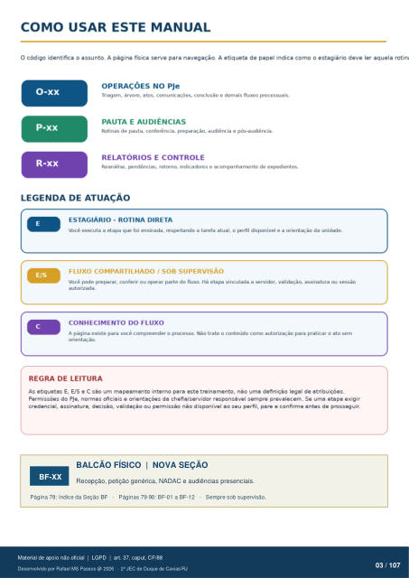

Texto da camada original do PDF
BF-XX
BALCÃO FÍSICO | NOVA SEÇÃO
Recepção, petição genérica, NADAC e audiências presenciais. Página 78: índice da Seção BF · Páginas 79·90: BF-01 a BF-12 · Sempre sob supervisão.
Ver também o infográfico original (página 3)
